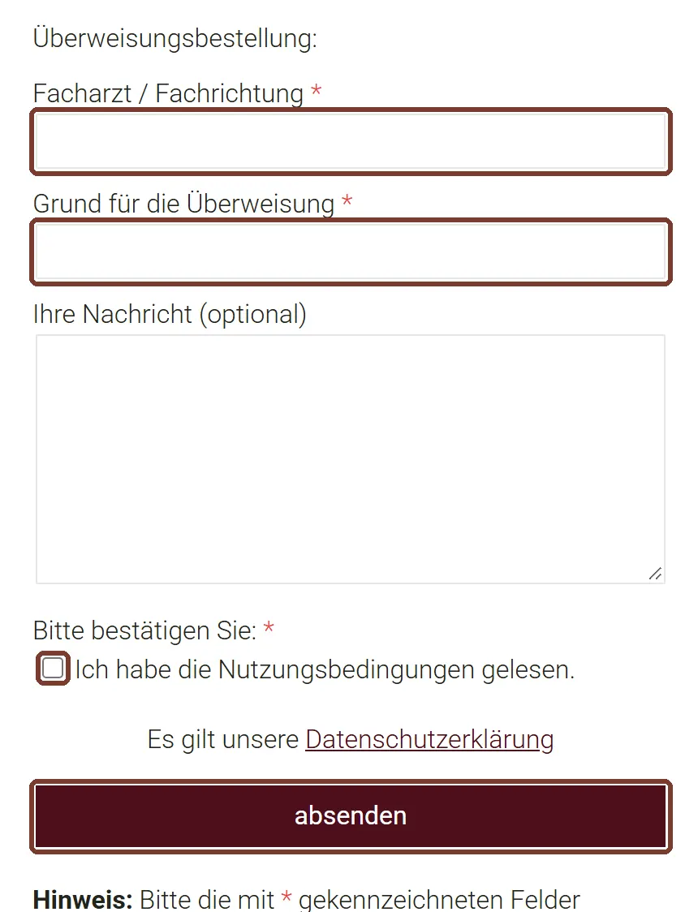
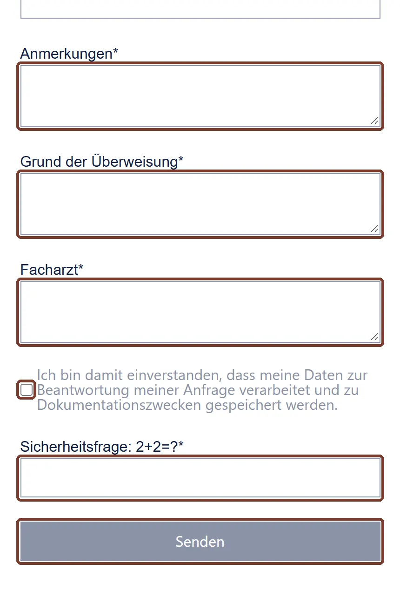

Überweisung online bestellen
Das Formular ist für Routine-Überweisungen. Jeder Standort hat ein eigenes Formular, deshalb fragen wir zuerst, bei wem Sie Patient sind.
Bitte wählen Sie oben Ihre Ärztin oder Ihren Arzt, dann erscheint Ihre Anleitung.
Erst ganz lesen. Der Knopf öffnet ein neues Fenster. Diese Anleitung bleibt offen.
Formular öffnen
Überweisung Wettringener Straße öffnen
Erscheint ein Hinweis zu Cookies, tippen Sie auf „Alle ablehnen“.
Felder ausfüllen und absenden
Tragen Sie Name, Geburtsdatum und Krankenkasse ein, dann Facharzt oder Fachrichtung und den Grund. Setzen Sie den Haken bei den Nutzungsbedingungen und tippen Sie auf absenden.

Beispielansicht vom 02.11.2026, Markierung ergänzt Abholen
Die Überweisung liegt am nächsten Werktag in der Praxis. Waren Sie im Quartal noch nicht in der Sprechstunde, kann es etwas länger dauern. Für andere Personen brauchen Sie eine Bevollmächtigungskarte.
Erst ganz lesen. Der Knopf öffnet ein neues Fenster. Diese Anleitung bleibt offen.
Formular öffnen
Felder ausfüllen und senden
Alle Felder sind Pflicht, auch Anmerkungen: Haben Sie keine, schreiben Sie „keine“. Tragen Sie Grund und Facharzt ein, setzen Sie den Haken, lösen Sie die Rechenaufgabe und tippen Sie auf Senden.

Beispielansicht vom 02.11.2026, Markierung ergänzt Wie es weitergeht
Die Bearbeitung dauert bis zu 24 Stunden. Spezielle Überweisungen gibt es nur nach Rücksprache mit den Ärzten. Fragen dazu beantwortet die Anmeldung: 02556 278.